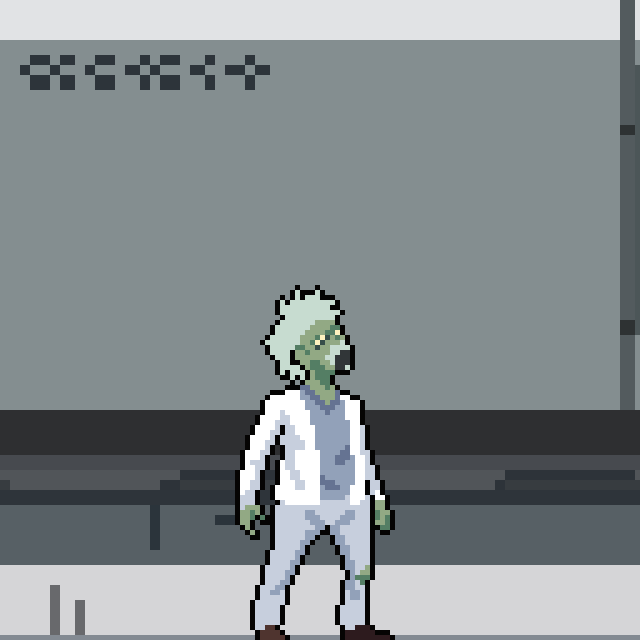
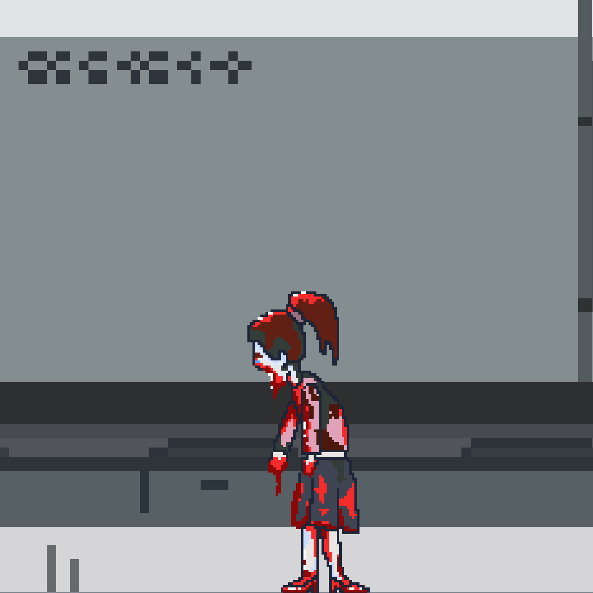
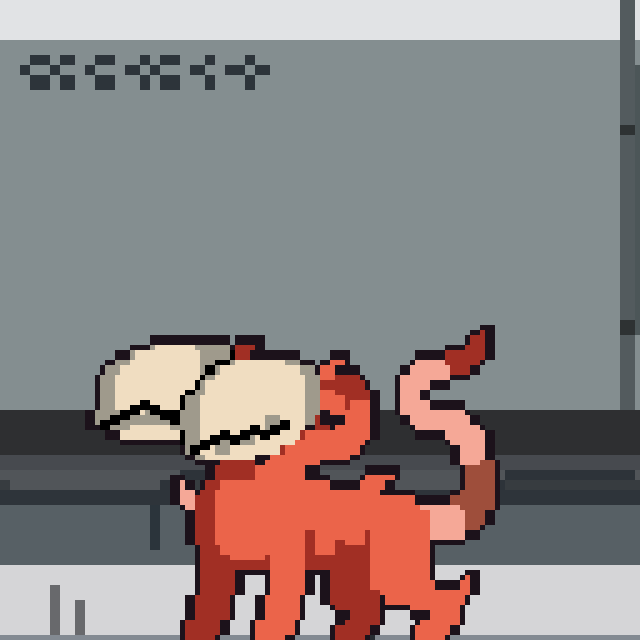
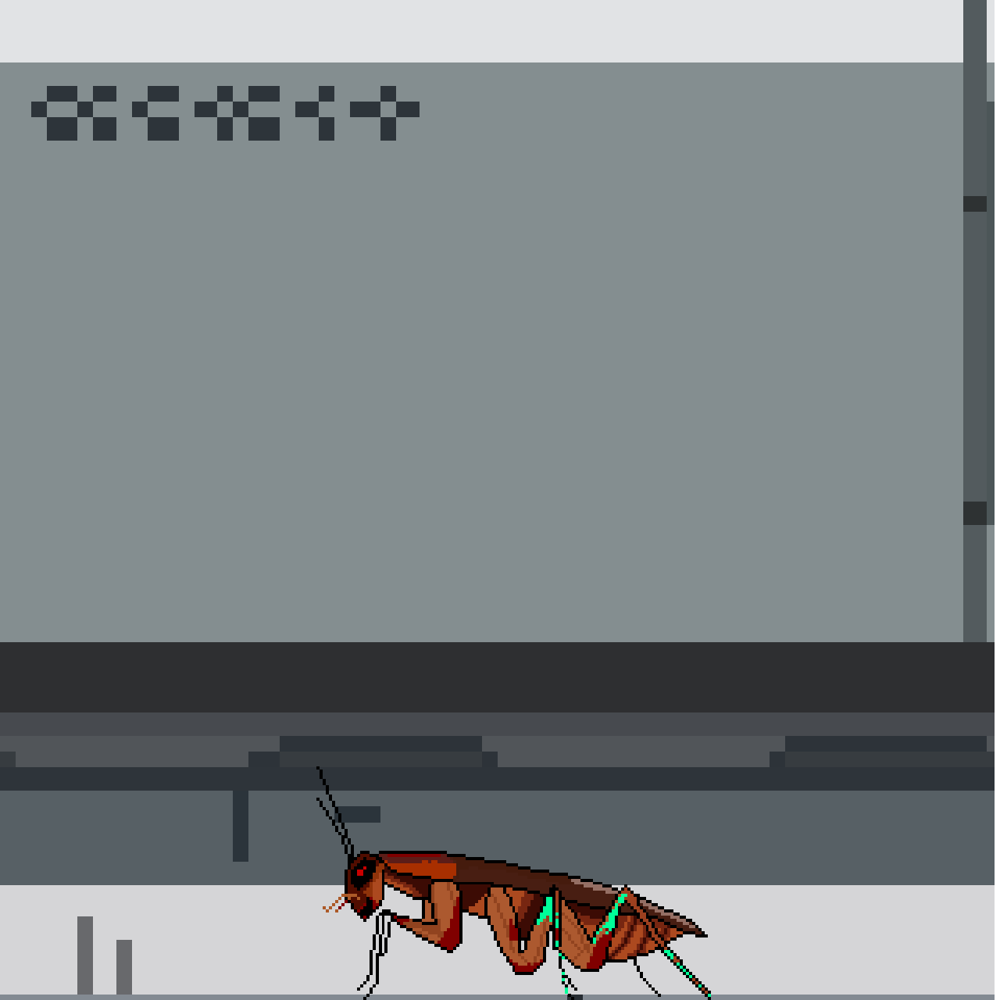
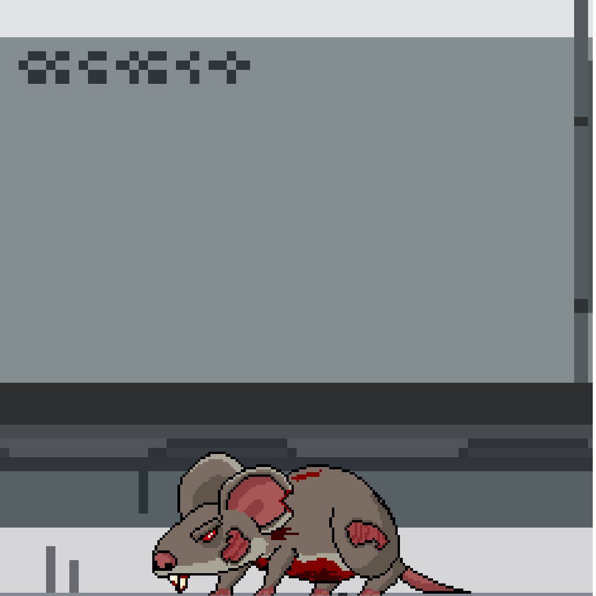
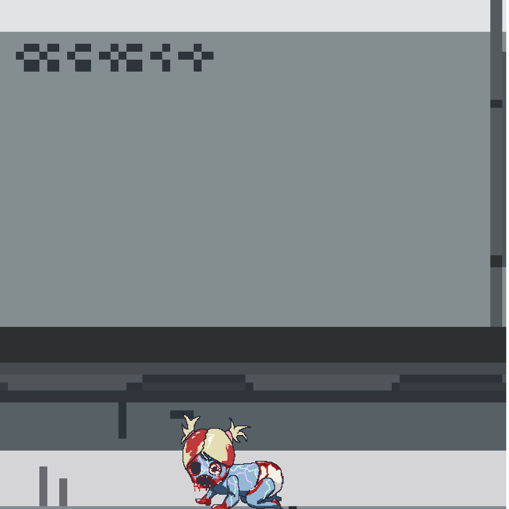
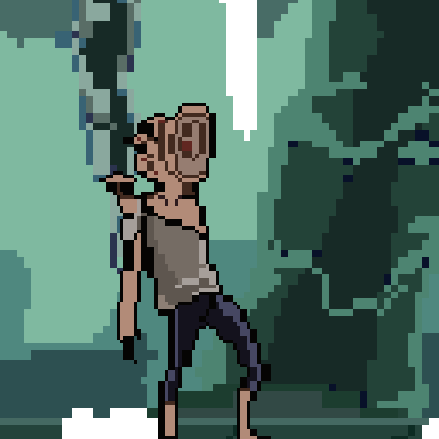

Personnel Records // Unauthorized Access Restricted
In the depths of the underground laboratory, where children are treated as mere experiments for human evolution,
one survivor attempts the impossible. This archive contains the biological and tactical data of the boy who chose
to face the nightmare to protect his bloodline.
STATUS: ACTIVE
ZOI
Zoi is a teenage boy from a quiet town. To protect his family from the cruel laws of the scientists,
he willingly surrendered himself as a test subject. Now, in the midst of a containment breach,
he must rely on his agility and determination to escape the mutants swarming the facility.
Subject 004, codenamed "Tanker," is a massive biological anomaly encountered in the primary containment halls.
Resulting from an overdose of experimental growth serums, this subject has developed impenetrable muscle density
at the cost of its higher brain functions. It serves as a living wall for the facility.
STATUS: DORMANT
TANKER
This Zongus is a slow but unstoppable force. Its primary tactic involves using its sheer mass to crush intruders.
While its movements are predictable, a single blow can be fatal. It is highly resistant to standard attacks,
requiring Zoi to use speed and environment-based strategies to survive the encounter.
Subject 006, referred to as the "Mad Scientist," represents the reanimated remains of the facility's research team.
Unlike higher-tier mutations, these subjects lack individual strength but are extremely dangerous in large numbers.
They retain a fractured memory of their former workspace, often found wandering in groups near laboratory equipment.

STATUS: AGITATED
MAD SCIENTIST
The Mad Scientist is a common swarm enemy. They utilize erratic movements to overwhelm Zoi,
making them difficult to target when grouped together. Their primary attack is a desperate
lunge driven by the mutagen's hunger. While a single unit is easily dispatched, a
contain breach involving multiple subjects requires immediate crowd control.
Subject 007, codenamed "Lady Zongus," represents the tragic civilian casualties of the initial containment breach.
These subjects were once ordinary citizens caught in the crossfire of the mutagen outbreak.
Now driven by primal, mindless hunger, they wander the facility's lower levels in disorganized hordes.

STATUS: WANDERING
LADY ZONGUS
Lady Zongus is a common swarm threat encountered in residential and service sectors.
Individually slow and weak, their danger lies in their tendency to swarm targets in tight corridors.
They lack tactical awareness, relying purely on numerical advantage to overwhelm their prey.
Swift movement is key to avoiding being cornered.
Recovered from Sector D-2, this subject is a results of failed domestic animal mutagen exposure.
It has developed extreme aggression and binary neural pathways, making it a persistent hunter.
Immediate neutralize order is in effect for all unauthorized personnels.

STATUS: ACTIVE
ORTHRUS
Orthrus is a pack hunter, though often found solitary due to facility containment breach.
It possesses dual brain functionality, allowing it to track and engage multiple targets simultaneously.
Its movements are erratic and unpredictable, reverting to primal rage upon visual contact.
Recovered from the lower maintenance tunnels, Subject 009 is a result of extreme insectoid mutagen exposure.
It has developed hyper-reflexive movement and a hard chitinous shell, making it a persistent and
annoying pest within the facility. Immediate neutralization is advised before a swarm forms.

STATUS: ACTIVE
SCUTTLER
The Scuttler is a rapid-moving swarm hunter often found in damp or dark sectors.
It possesses a unique "fly-walk" capability, allowing it to traverse both floors and walls
with terrifying speed. While individually weak, its erratic movement makes it a difficult target
to pin down, especially when attacking in large numbers.
Subject 010, identified as the "Vermin," is a byproduct of the facility's failed waste management bio-trials.
These rodents have mutated into aggressive scavengers with heightened sensory perception and
increased jaw pressure, capable of chewing through reinforced containment cables.

STATUS: AGITATED
VERMIN
The Vermin is a small but tenacious swarm enemy that primarily inhabits the ventilation and
drainage systems of Stage 2. They rely on ambush tactics, hiding in the shadows before
launching a synchronized attack. Their small size makes them a nuisance to target,
requiring precise timing to neutralize before they overwhelm the area.
Subject 002, codenamed "Expectorator," was discovered in the chemical waste disposal sector.
Exposure to experimental toxins has caused its digestive system to overproduce highly acidic bile.
It is extremely dangerous at a distance and should be approached with extreme caution.
STATUS: ACTIVE
EXPECTORATOR
The Expectorator is a tactical threat that forced the facility to implement long-range containment protocols.
It lacks the physical strength of other subjects but compensates with its ability to launch corrosive projectiles.
Its movements are twitchy and unpredictable, often retreating to higher ground to rain down acid on its targets.
Subject 008, codenamed "Baby Zongus," represents the most tragic scale of the outbreak.
Small and erratic, these subjects have undergone rapid cellular mutation, resulting in
distorted proportions and a high-pitched, piercing screech used to alert the swarm.

STATUS: AGITATED
BABY ZONGUS
Baby Zongus is a fast and unpredictable swarm enemy. Because of their small hitboxes,
they are difficult to hit with standard attacks. They often hide in ventilation
ducts or under laboratory furniture, waiting to leap at Zoi. Their primary danger
is their speed and the ability to overwhelm the player when attacking in groups.
Subject 004, codenamed "Echo-Stalker," is a terrifying evolution of the mutagen infection.
Completely blind due to fungal-like growths over its eyes, it has developed an advanced form of echolocation.
It remains perfectly still until it hears a sound, then strikes with lethal precision and speed.

STATUS: SEARCHING...
ECHO-STALKER
Inspired by the most dangerous silent predators, the Echo-Stalker requires players to use stealth.
Running or jumping near this subject is a death sentence. It is known to twitch and emit clicking sounds
to map its surroundings. Once a target is located, it enters a "Frenzy" state, making it nearly impossible to outrun.
Recovered from Sector D-1, this subject is a results of failed high-altitude mutagen exposure experiments.
It has developed extreme internal acidity and external biosecurity threats, making it a highly volatile asset.
Authorized personnel are advised to maintain distance during encounter.
STATUS: ACTIVE
SCREECHER
Screecher entities are chaotic and reactive.
Individually weak, they gain strength in numbers, overwhelming targets through sheer volume and erratic attacks.
They are known to 'grab' and 'bite' targets, utilizing erratic movements.
Authorized personnels are advised to maintain distance during encounter.

 STATUS: ACTIVE
STATUS: ACTIVE

 Walk
Walk
 Run
Run
 Jump
Jump
 Hurt
Hurt